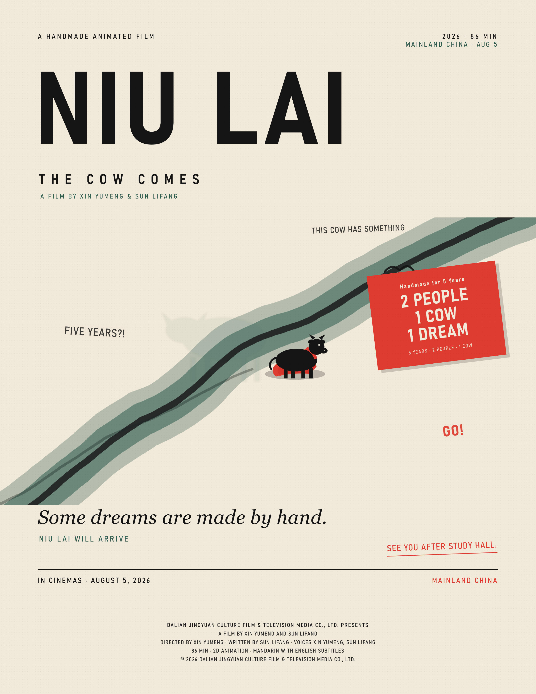

Niu Lai is a handmade animated film from mainland China. The English title is Handmade Dreams, the poster sets the subtitle The Cow Comes under the Chinese title 牛来, and the tagline is Some dreams are made by hand.

The design is built from three colours: an off-white paper background, near-black type, and one warm red for the badge. A single pale green path runs diagonally through the poster and the small black cow is the only drawing on it. Three short lines of text sit around the cow and tell a tiny story on their own, from This cow has something to Five years?! and finally Go!.
The red badge is the only strong colour, and it does the most work. It says 2 people, 1 cow, 1 dream, which is the whole film in six words. Putting it at a slight angle stops the poster from looking like a school notice board.
It is directed by Xin Yumeng and written by Sun Lifang, and the two of them also voice the main roles. The film runs for 86 minutes, is drawn in 2D animation, and is in Mandarin with English subtitles. It opened in mainland China on 5 August 2026.
Dalian Jingyuan Culture Film and Television Media Co., Ltd. presents a film by Xin Yumeng and Sun Lifang. Directed by Xin Yumeng, written by Sun Lifang, with voices by Xin Yumeng and Sun Lifang.
The poster is the source for every fact on this page.
The film and the artwork belong to Dalian Jingyuan Culture Film and Television Media Co., Ltd. The poster is shown here for a school project only.